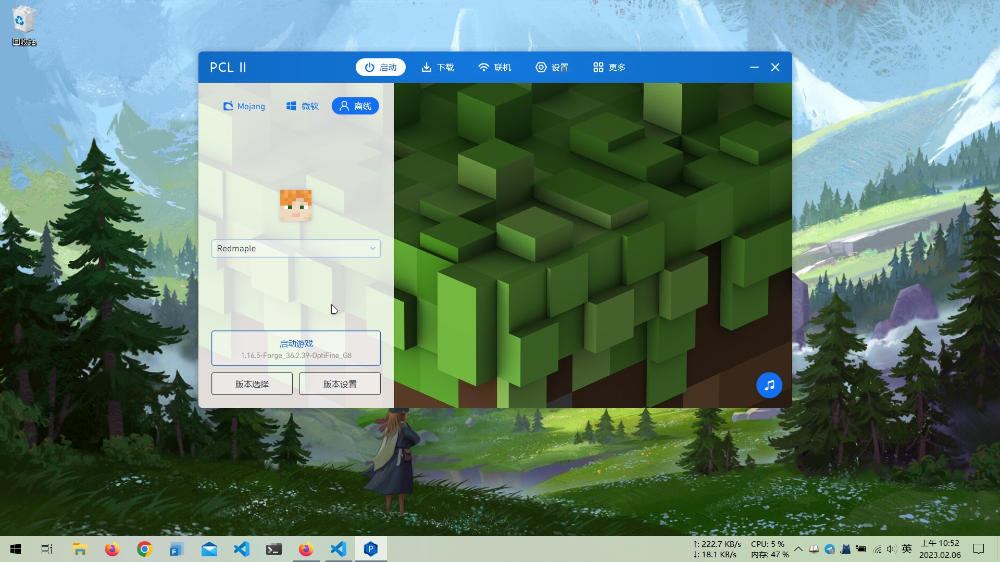
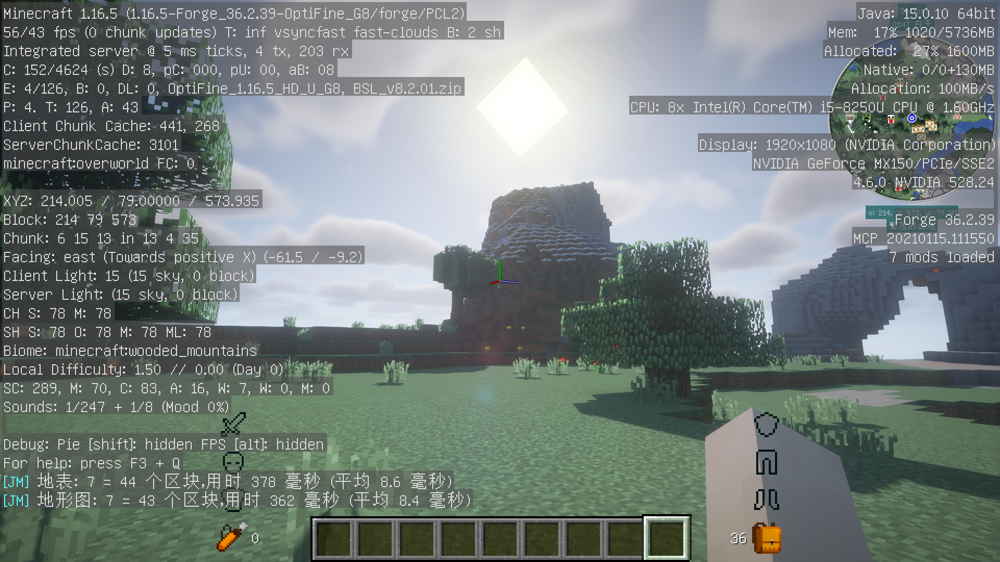
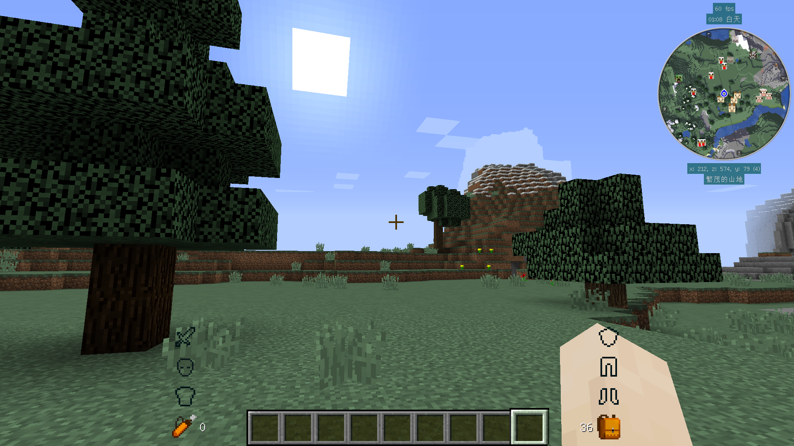
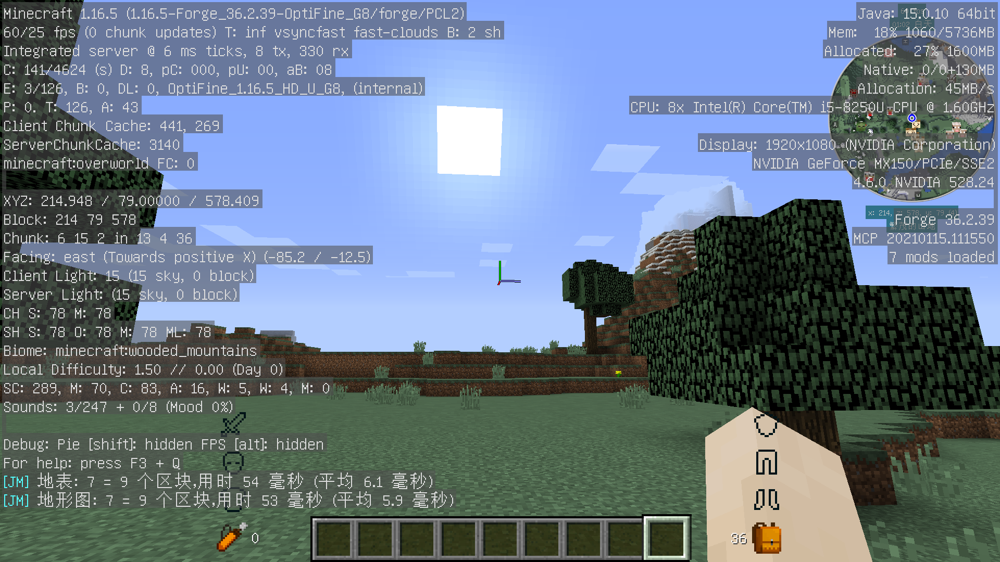

记事本
关于标记语言与文档应用
个人看法：
- 简单，简短的文档使用 markdown + HTML 进行编写。
- 复杂，冗长或含有大量复杂样式的文档使用 LibreOffice 进行编写。
Chrome
Google chrome 的用户数据文件在 ~/.config/chrome，备份此文件夹即可。
Fcitx5 词库
fcitx5 支持搜狗输入法的细胞词库。可以在配置的词典设置中打开搜狗输入法的官网直接下载词库或者将转制的 .dict 文件放到 ~/.local/share/fcitx5/pinyin/dictionaries/ 中。然后重启 fcitx5。
vscode
主题
群友发布了一个新的 vscode 主题（ConAntares.photonica），用起来感觉还不错。
白屏
如果 VSCode 启动后，主窗口为空白页。这个问题一般是因为 vscode 使用的 electron shell 与 GPU 硬件加速存在问题，使用下列命令启动 VSCode 即可：
$ code --disable-gpu
如果是在更新后发生这个问题，那么将 ~/.config/Code/GPUCache 下的文件删除即可。
git
突然发现 git 仓库的整体大小已经接近 1.3GB 了，是时候清理一下 git 历史记录了。
我使用了如下的命令：
git gc --aggressive
Minecraft
OpenJDK
最近在安装 minecraft 的时候，发现 Java8 的支持周期很长，以至于至今都没有停更。
- Java SE 8 (LTS) 于 2014 年发布，仅 Oracle 就会把它维护到 2030 年。
而且 openJDK 的维护情况也是有一点复杂，目前还在维护的就有 openJDK 8 (LTS)、11 (LTS)、17 (LTS)、19、20、21 (LTS) 六个版本。
同时根据 minecraft 维基1以及一些实机运行结果。理论上，
- minecraft 1.12 至 1.16.5 版本，需要 Java 8 (1.8.0) 或更新的版本；
- minecraft 1.17 至 1.17.1 版本，需要 Java 16 或更新的版本；
- minecraft 1.18 及更新的版本，需要 Java 17 或更新版本。
我所安装的是 minecraft 1.16.5 版本，选择的是 minecraft 维基推荐的 Zulu OpenJDK 中的 openJDK 1523。minecraft 的版本需要和 openJDK 互相匹配，同时高版本的 JDK 可以带来更好的性能。
预计 minecraft 1.16.5 和 1.12.2、1.7.10 一样，会成为一个诸多 mod 玩家汇聚的版本。
TL;DR
✅ Recommendation: Use Adoptium Eclipse Temurin 17 and ensure that your local version matches the CI and production version.
Make sure, you have the latest patch level 17.0.3 or later, due to CVE-2022-21449.
启动器
这次我没选择 HMCL 作为游戏启动器，而是选择了 PCL2。就使用体验而言，还算不错。

光影包
由于在开启光影的情况下，如果再添加材质包会明显拉低游戏帧率（无法稳定 30FPS）4。所以我只能使用原版材质。帧率低于 40FPS，我会感受到明显的画面撕裂……
光影包我选择的是 BSL Shaders。光影包不需要版本号严格地一一对应（它可以向下兼容旧版本），但材质包不行。BSL 的默认预设是 High，将它调成 Low5 就行了；同时在视频设置中将图像品质修改成流畅（默认是高画质）。




数据包与 mod
除了许多可用的 Mod 之外，1.16 也有许多的数据包（datapak）可用。
Fabric
虽然本次安装 minecraft mod 时，我选择的是 Forge 和 OptFine。但查资料的时候发现 fabric 最好是和 Iris Shaders 与 Sodium 6 一并使用；这可以说是来自开源社区的解决方案（实机运行的效果也和前者大差不差）。
外部链接
一些有用的外部链接：
Mindustry
Mindustry 是一个非常棒的 RTS 游戏8。但它不适合于在手机上玩，整个游戏更适合使用键鼠进行控制。
steam 上发布的版本是 DRM 加密的便携版。官网发布的是不完全的便携版7或 jar 文件。由于我看不懂 json 文件，所以也没办法将 mindustry 配置成便携模式。
你可以在 steam 购买 Mindustry！这是对于此游戏的认可与赞助💕，有益于开发者持续开发并改进游戏🤝！
修改 mindustry 的存档文件夹位置
要修改 mindustry 的存档位置，可以新建一个 CMD 文件，内容为：
set APPDATA=%CD%
mindustry.exe
其中，第一行表示将存档文件夹（APPDATA）路径设置为当前文件夹（%CD%）。第二行表示启动 mindustry.exe。
它也可以设置为：
set APPDATA=%CD%\save
java -jar mindustry.jar
词典
关于 goldendict 使用的词典文件，我一般是在 download.freemdict.com 获取免费分享的词典。
在阅读了一些帖子后，我认为，我至少需要以下词典：
- 英汉双解词典
- 汉英词典
- 网络词典
具体的方案就是：
- 简明英汉字典增强版：用于快速查询单词释义；
- 朗道高阶英汉双解词典：用于交叉查询单词释义；
- 牛津高阶双解（第 9 版）：用于交叉查询单词释义；
- 韦氏高阶英汉双解词典：用于交叉查询单词释义；
- 现代汉英综合大辞典：用于查询中文词语对应的词汇；
- English Wikipedia：用于显示词汇的百科词条（尤其是无中文对应用语时）；
- Urban Dictionary：用于查询俚语和网络用语。
sha256sum
$ sha256sum <file> #计算文件的校验和
$ sha256sum --check <file.sha256> #从文件中读取校验和并检验它们；或简写为 -c
$ sha256sum * > testing.sha256 #将校验和写入 sha256 文件
字体
字体库
汉化组编写的高级字幕文件（ASS）经常使用多种字体，以下是一个实用的字体库：
- https://cloud.404.website/
- 超级字体整合包 XZ 下载地址：
magnet:?xt=urn:btih:bc72daa4f58fdda082c603ce6eee1d8199359434
- 超级字体整合包 XZ 下载地址：
衬线字体
衬线体（英语：Serif），是一种有衬线的字体，又称为有衬线体、衬线字、曲线描边字，俗称白体字；而与之相对的，没有衬线的字体则被称为无衬线体。衬线是字形笔画的起始段与末端的装饰细节部分9。
衬线体（即“白体”），中国大陆地区和港台的印刷界称之为宋体。另外，无衬线体（sans serif）在中文通常称为黑体。
思源字体
| 名称 | 包名 |
|---|---|
| Source Han Sans 思源黑体 | adobe-sourcehansans-cn-fonts |
| Source Han Serif 思源宋体 | adobe-sourcehanserif-cn-fonts |
| Source Han Mono 思源等宽 | - |
| Source Code Pro | adobe-sourcecodepro-fonts |
网络带宽计量单位
信道就是“传送信息的通道”。首先，信道可以从广义上分为“物理信道 ＆ 逻辑信道”。
“带宽”指的是：某个信道在单位时间内最大能传输多少比特的信息。
“比特率”或“字节率”很容易搞混淆。用英文表示的话——大写字母 B 表示【字节】；小写字母 b 表示【比特】。1Byte = 8bit
由于带宽的数字通常很大，要引入“K、M、G”之类的字母表示数量级，于是又引出一个很扯蛋的差异——“10 进制”与“2 进制”的差异。
- 【10 进制】的 K 表示 1000；M 表示 1000x1000（1 百万）
- 【2 进制】的 K 表示 1024（2 的 10 次方）；M 表示 1024x1024（2 的 20 次方）
为了避免扯皮，后来国际上约定了一个规矩：对【2进制】的数量级要加一个小写字母 i。比如说：Ki 表示 1024；Mi 表示 1024x1024 ...... 以此类推。
举例：
- 1Kbps 表示 “1000 比特每秒”
- 1KiBps 表示 “1024 字节每秒”
使用 KeePassXC 配置 TOTP
起因
之前 GitHub 要求全部的开发者都必须使用 2FA10，我觉得很麻烦（看着说明列表，需要额外安装一个验证程序）。然后就直接把文档库搬到了 gitlab 上。
然后今日11和群友的交流中，了解并尝试了使用 KeePassXC 的 TOTP 作为 2FA 验证器。此时，我在 GitHub 上已经删库跑路了，如果这时再把文档库搬回 GitHub 多少有点反复横跳的感觉……
所以写个简记，供被 GitHub 2FA 策略困扰（不想用手机或多装个 APP）的人查阅。
如何操作
- 打开 KeePassXC，同时打开 https://github.com/settings/security；
- 点击
Enable two-factor authentication按钮进入设置页面； - 在 KeePassXC 程序中，右键单击 GitHub 账户条目，在菜单中选中
TOTP->设置 TOTP； - 在 GitHub.com 的设置页面中，点击
enter this secret，这时你会看到一个标题为Your two-factor secret的弹窗窗口，拷贝下方的字符串，然后复制到 KeePassXC 之中，确定并保存后，GitHub 账户条目旁会出现一个时钟的图标； - 在 KeePassXC 中，点击条目说明页面右上方的时钟图标可以查看当前的 TOTP 密码；
- 将 KeePassXC 生成的 TOTP 密码复制到 GitHub.com 中；
- 验证成功后，GitHub 会生成一个名为
github-recovery-codes.txt的恢复代码，请下载保存此文件； - 点击确定完成设置流程。
恢复代码文件可以存储至 KeePassXC 数据库之中（编辑条目 -> 高级 -> 附件）
Sony Xperia 实用工具
| 名称 | 用途 |
|---|---|
| Newflasher | 系统固件命令行强刷工具 |
| Xperifirm | 系统固件下载工具（需要代理） |
| payload-dumper-go | Payload 一键解压工具 |
| Magisk 安装向导 | root 系统工具 |
| Sony xperia driver | Sony Xperia 设备驱动ADB&Fastboot driver for sony xz2 |
针对 Sony XZ2：
- Sony Xperia XZ2 ROMs, Kernels, Recoveries, & Other
- LineageOS for Sony XZ2 (akari)
- 蓝灯模式/Bootloader/Fastboot/Download：关机，按住
音量加键，用 USB 数据线连接至电脑； - 绿灯模式/RECOVERY/Flash mode：关机，同时按住
音量减键和电源键；- 关机后，按住音量键和电源键，等到 SONY 标志出现时立即松开，即可进入 RECOVERY 模式；
- 强刷完固件后，如果要刷 ROOT，此时不要开机，继续安装 TWRP；
- 如果卡在 SONY logo 界面，没有任何反应，可以同时按住
音量减键、音量加键和电源键，强制关机； - 设备驱动使用 Sony 官方和 newflasher 自带的驱动即可。
-
Minecraft 1.16.5 在 openJDK 17 上无法运行。 ↩
-
据说 minecraft 1.16.5 是在 Java 8 开发，但测试环境是 Java 11。 ↩
-
当前设备的显卡是 MX150，算是一张已经入土的渣卡了。 ↩
-
low 和 medium 画质预设其实差别很小，起码我感受不出来。但帧率却差了 5~10 FPS。 ↩
-
Sodium 是 Iris 的前置 mod。 ↩
-
游戏本体与依赖的 Java runtime environment 是便携的，但是存档仍然保存在用户文档文件夹之中。 ↩
-
它同样是基于 Java 开发的游戏。 ↩
-
Raising the bar for software security: GitHub 2FA begins March 13 ↩
-
2023 年 3 月 17 日 ↩